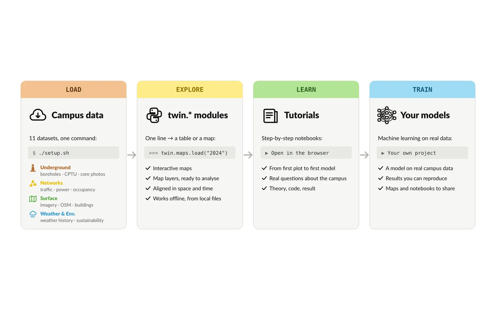
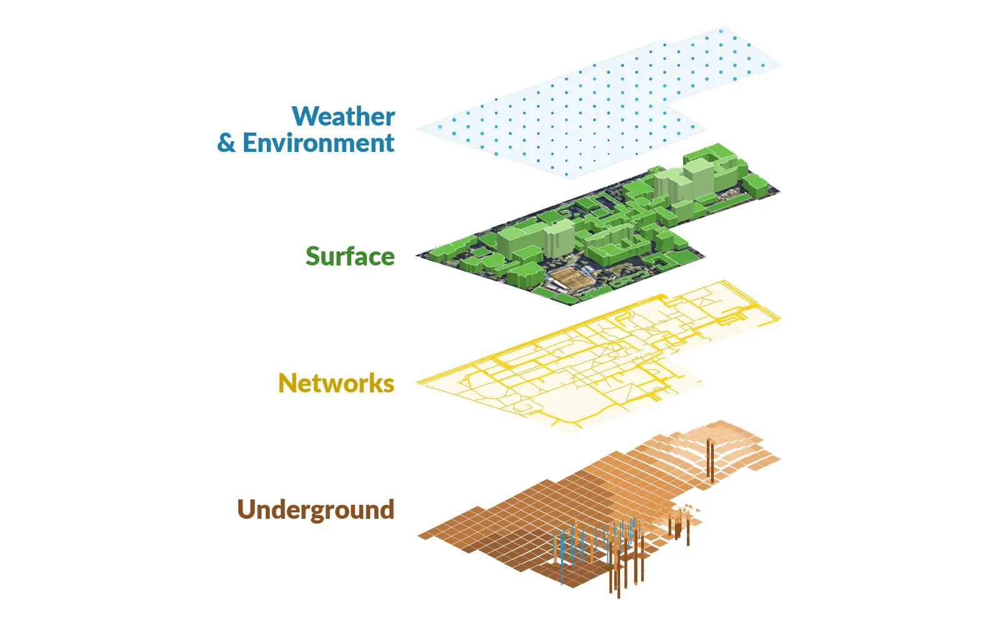

UNSW Digital Twin: machine learning on real campus data
CVEN4801 teaches machine learning on real data from the campus its students walk across every day. I built a curated offline dataset of the UNSW Kensington campus and unsw_twin, the Python toolkit that reads it, and wrote the CVEN4801 tutorials on top of them.
The problem
CVEN4801, Intelligent Systems in Civil and Environmental Engineering, teaches machine learning to civil and environmental engineering students. Real campus data exists, but it is scattered. Aerial imagery sits behind an API. Borehole logs and cone penetration tests are pages in PDF reports. Electricity load, weather and traffic come from different agencies, each with its own format, coordinate system and clock. Some sources record time in fixed AEST, others in Sydney local time with daylight saving.
A student who has to clean all of this before the first model never gets to the machine learning. The course needed one dataset that loads in one line, works offline in Colab or on a laptop, and gives every student the same data.
Approach
Curate once, at build time. Maintainer scripts fetch each source, parse it and write finished files. Borehole logs are extracted from PDF reports with a word-position parser, stitched across page breaks and checked for depth continuity. CPTU soundings are digitised from the vector plots in a geotechnical report. All map features are converted to one coordinate system (MGA Zone 56, EPSG:28356) and all time stamps to one time zone (Australia/Sydney). Loaders only read files and never rename columns.
One interface for every dataset. Each dataset is a small module with the same four functions: load(), show(), available() and about(). about() returns the source, licence, citation, units and a data version hash, so two students can check that they have the same data. show() draws a default plot with matplotlib, folium or kepler.gl.
A shared vocabulary of products. Every output is described by three axes: where (raster, features or no location), when (static, dated snapshots or time series) and how deep (none, depth intervals or depth samples). A contract test checks every product of every module against its axes. Cross-dataset tools such as between, within and rasterize work on any product that fits, so a student can turn building footprints into a mask with the same pixels as the aerial image.
Tutorials on real questions. Each tutorial has a notebook with tasks, a notebook with solutions and slides. A student opens it in Colab and one setup cell installs the toolkit and downloads the data.
Results
The toolkit ships 11 datasets for the campus and a 150 m margin around it:
- 136 Nearmap aerial captures from 2009 to 2026, about 30 cm per pixel, with dated OpenStreetMap layers.
- 76 campus buildings and 18,839 rooms from MazeMap, plus CVEN class timetables for 2023–2026 and the hourly building occupancy built from them.
- 272 surveyed height marks, 67 consolidated borehole logs, 30 CPTU soundings and core-box photos.
- ERA5 weather history, hourly road traffic counts, 15-minute load of the zone substation that supplies the campus, and UNSW sustainability data.
Five tutorials use them:
- The UNSW digital twin and aerial imagery.
- Getting data from an API and exploratory data analysis.
- Campus height uncertainty with Gaussian processes and a sampling plan.
- Patterns in campus electricity and buildings with PCA, k-means and anomaly detection.
- Soil classes from CPTU soundings with logistic regression, trees, random forests and SVM.
The course first runs with these tutorials in Term 3, 2027.


My role
Research Officer at UNSW since May 2026, supervised by Prof. Ryan Armstrong. I designed and built the dataset, the unsw_twin toolkit, its tests and documentation, and the CVEN4801 tutorial notebooks and slides.
Stack
- Python
- pandas
- GeoPandas
- xarray
- rioxarray
- rasterio
- pyproj
- Shapely
- matplotlib
- folium
- kepler.gl
- scikit-learn
- pdfplumber
- pytest
- uv
- Jupyter
- Google Colab
- Cloudflare R2